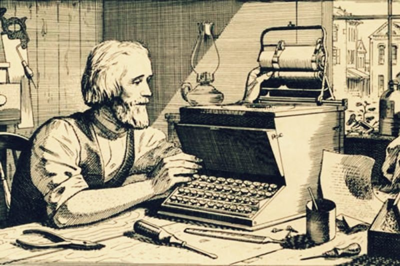

Le clavier Qwerty a été conçu en 1868 à Milwaukee par Christopher Latham Sholes en répartissant aux opposées du clavier les touches correspondant aux paires de lettres les plus utilisées dans la langue anglaise afin d'empêcher les tiges (portant les caractères) des machines à écrire de l'époque de se croiser et de se coincer. Ce clavier a été vendu à l'entreprise Remington en 1873. Le clavier Qwerty (et par extension le clavier Azerty) a donc été conçu dans une optique purement technique, à l'encontre de l'ergonomie et de l'efficacité.
